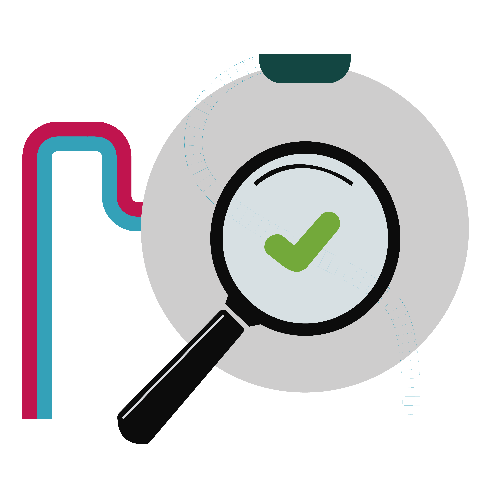
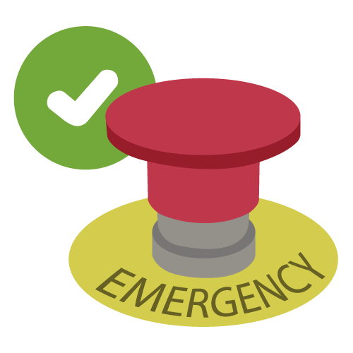
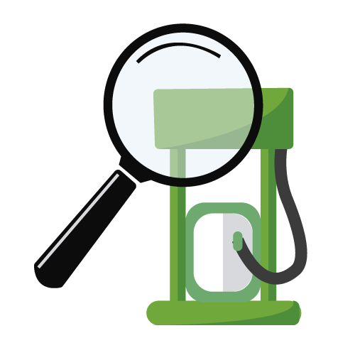
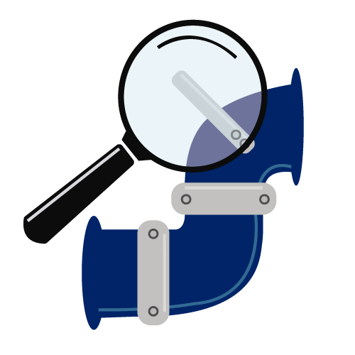
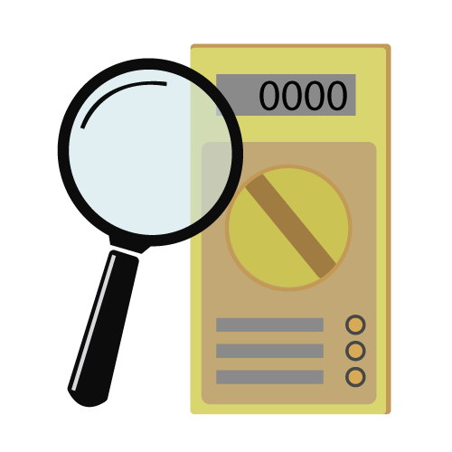
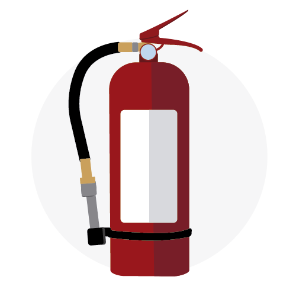

punto-once

FO-01 INSPECCIÓN DE TANQUES Y REGISTROS

FO-02 PRUEBA OPERATIVA DE DISPOSITIVOS DE SEGURIDAD

FO-03 INSPECCIÓN DE DISPENSARIOS

FO-04 INSPECCIÓN DE ACCESORIOS DESCARGA Y TUBOS DE VENTEO

FO-05 INSPECCIÓN DE INSTALACIONES ELÉCTRICAS
FO-06 PROGRAMA DE LIMPIEZA DIARIA DE ÁREAS E INSPECCIÓN DE TRAMPA

FO-07 INSPECCIÓN MENSUAL DE EXTINTORES
FO-08 INSPECCIÓN DE SEÑALAMIENTOS
 FS-20 PROGRAMA ANUAL DE MANTENIMIENTO
FS-20 PROGRAMA ANUAL DE MANTENIMIENTO
 FS-21 PLAN DE MANTENIMIENTO
FS-21 PLAN DE MANTENIMIENTO
 FS-22 LISTA DE EQUIPOS CRÍTICOS
FS-22 LISTA DE EQUIPOS CRÍTICOS